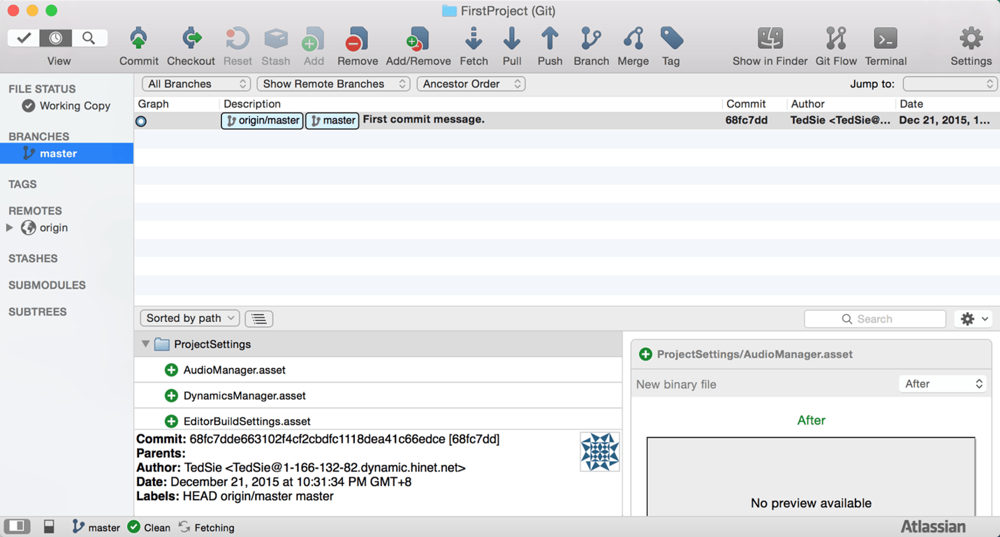
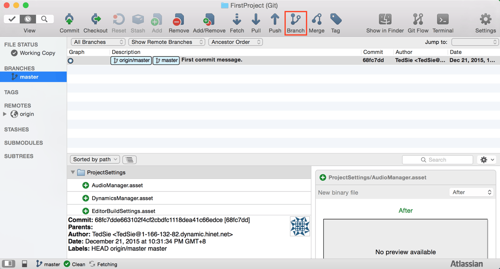
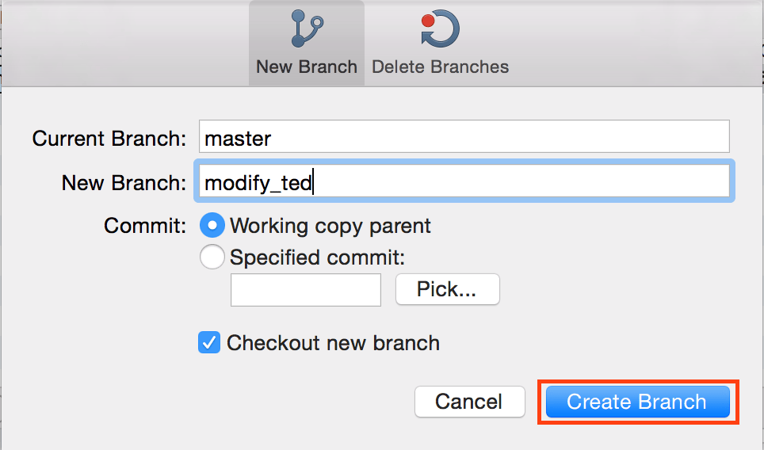
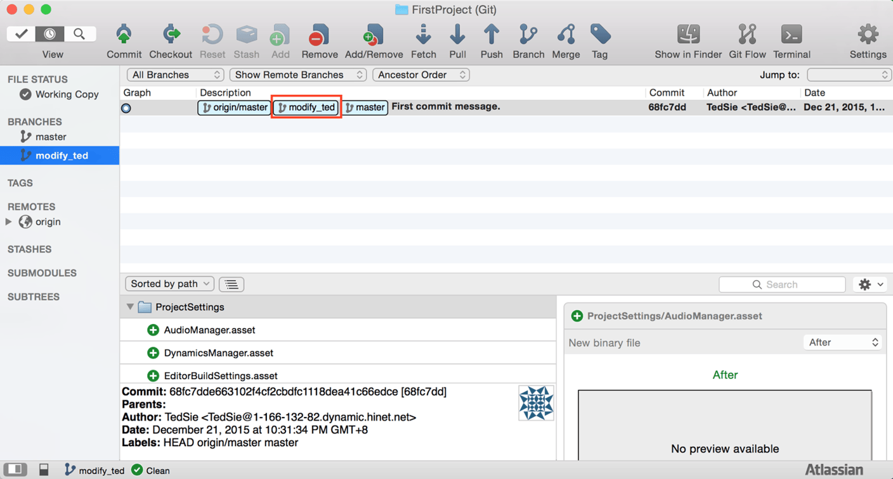
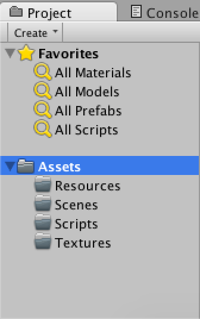
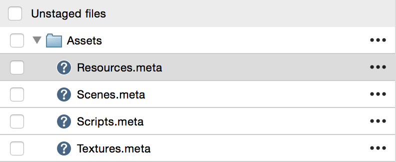
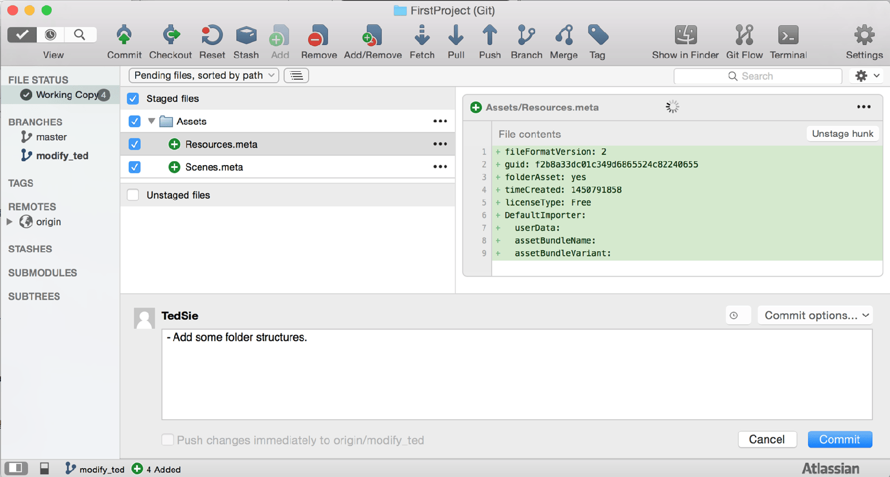
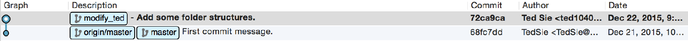

git branch：在當前節點下，新增分支，用來切割專案進程
git commit：將目前的修改的資料，新增一節點到當前分支
這篇要來開始教各位我自己在使用 SourceTree 上的習慣
1.git branch
目前專案中已經有一個 master branch
master branch 是主要分支
用來作為專案的主要開發支線

這裡我的習慣做法為
在 master branch 上建立一新分支
點選 Branch 按鈕

填入分支名稱
按下 Create Branch 後即完成新增分支動作

分支新增完畢後會發現多了一些東西

在這裡新增的分支名稱為 modify_ted
這個分支就是個人在開發時用的分支
可以理解為這個分支是只有個人可以使用的分支
2.git commit
分支建立好後
來對專案做一些簡單的修改
在這裡只是單純的新增了 Unity 裡的資料夾結構

修改好後一樣會在 SourceTree 中看到這些改變

勾選這些改變
輸入 Commit Message 並點選 Commit 按鈕

Commit 完成後會發現這次的動作
只新增了 modify_ted 這個分支的節點
而 master 分支並沒有受到任何影響

這樣一來
就可以在個人環境上
已不會影響到主要專案分支為前提下
進行新功能開發